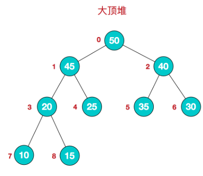
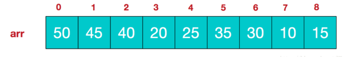
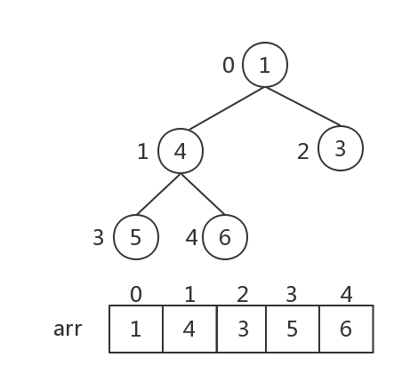
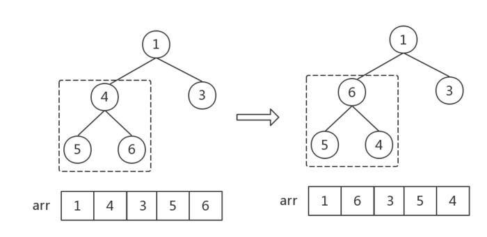
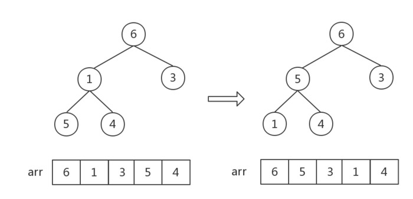

按照这种规律，数组中的第i个元素，在二叉树中对应的两个子节点的下标分别为2i+1和2i+2

对如上二叉树做升序排序，总共分为三步：
初始化大顶堆：首先选取最后一个非叶子结点(只需要调整父节点和子节点之间的大小关系，子结点之间的大小关系无需调整)， 下标为：i = Math.floor(arr.length/2 - 1) = 1，也就是数字4，如图中虚线框，找到三个数字的最大值，与父节点交换。

然后，下标 i 依次减1，找到父子结点中的最大值，做交换（即从第一个非叶子结点开始，从右至左，从下至上遍历所有非叶子节点）。

这一步中数字6、1交换后，数字[1,5,4]组成的堆顺序不对，需要执行一步调整。因此需要注意，每一次对一个非叶子结点做调整后，都要观察是否会影响子堆顺序！
此时根节点为最大值，将其与最后一个节点做交换（即交换数组第一个和最后一个）
除开当前最后一个结点6(即最大值)，将其余结点[4,5,3,1]组成新堆转化为大顶堆，并交换根节点和最后一个节点 (注意观察，此时根节点以外的其他结点，都满足大顶堆的特征，所以可以从根节点4开始调整，即找到4应该处于的位置即可)。
重复步骤2，直到堆中元素个数为1（或其对应数组的长度为1），排序完成。
原始数组：[3,44,38,5,47,15,36,26,27,2,46,4,19,50,48]
排序结果：
时间复杂度：shiftDown函数的内循环，最坏情况下复杂度是log n；heapSort函数的复杂度是n；按照最坏情况来算，整体的复杂度是O(n log n)
空间复杂度：声明的变量空间不随问题规模的增大而增大；swap和shiftDown两个函数，里面其实都可以放到主函数中而不必单独写成函数，这样做纯粹是方便理解， 因此也不占用额外的调用栈空间。空间复杂度为O(1)